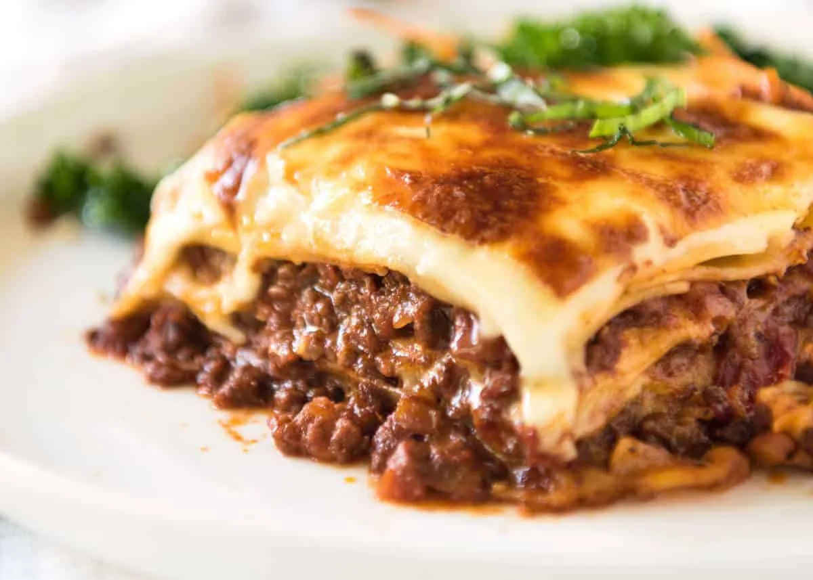

Lasagne
Description:
Lasagne is a rich and hearty Italian dish consisting of layers of wide, flat pasta sheets alternating with fillings like meat sauce (ragù), béchamel sauce, vegetables, cheeses, and seasonings. It's a popular comfort food known for its indulgent flavors and satisfying texture.
Ingredients:
- 1 brown onion
- 1 tbsp olive oil
- 1lb lean ground beef
- 1/2 tsp salt
- 1/4 tsp ground black pepper
- 1 jar of marinara sauce
- 12 ounces shredded mozzarella cheese
- 15 dry lasagne sheets
- 15 ounces whole-milk ricotta cheese
Steps:
- Heat the oven to 200ºC
- Finely chop 1 medium brown onion. Heat 1 tablespoon olive oil in a 12-inch or larger regular or cast iron skillet over medium-high heat until shimmering. Add the onion, 1 pound lean ground beef, 1/2 teaspoon salt, and 1/4 teaspoon ground black pepper, and cook, breaking the beef up into small pieces with a wooden spoon, until the beef is cooked through, 6 to 8 minutes. Remove from the heat and let cool for 5 minutes.
- Open 1 (25 ounce) jar marinara sauce. Spread a thin layer of the sauce in the bottom of a 9x13-inch baking dish. Stir the remaining sauce into the ground beef mixture.
- Shred 12 ounces low-moisture mozzarella cheese. Place 5 lasagna noodles in the baking dish. Dollop and spread 1 cup of the ricotta cheese over the lasagne sheets. Dollop and spread about 1 1/2 cups of the meat sauce on the ricotta, then sprinkle with 1 cup of the mozzarella.
- Arrange 5 more sheets over the mozzarella, followed by 1 cup of the ricotta cheese, 1 1/2 cups of the meat sauce, and 1 cup of the mozzarella. Top with a final layer of 5 sheets and the remaining sauce, spreading the sauce thin so that it almost completely covers the sheets. (Reserve the remaining 1 cup mozzarella for the end of baking.) Cover the dish tightly with aluminum foil.
- Bake for 1 hour. Check to make sure the sheets are done by poking the lasagna with a knife; the knife should slide easily through all the layers. If it doesn't, cover and cook for 15 minutes more.
- Uncover the lasagna and sprinkle with the remaining 1 cup mozzarella. Bake uncovered until the mozzarella is melted and lightly browned, and the sauce is bubbling, 8 to 10 minutes more.
- Let the lasagna cool on a wire rack for at least 15 minutes before serving.